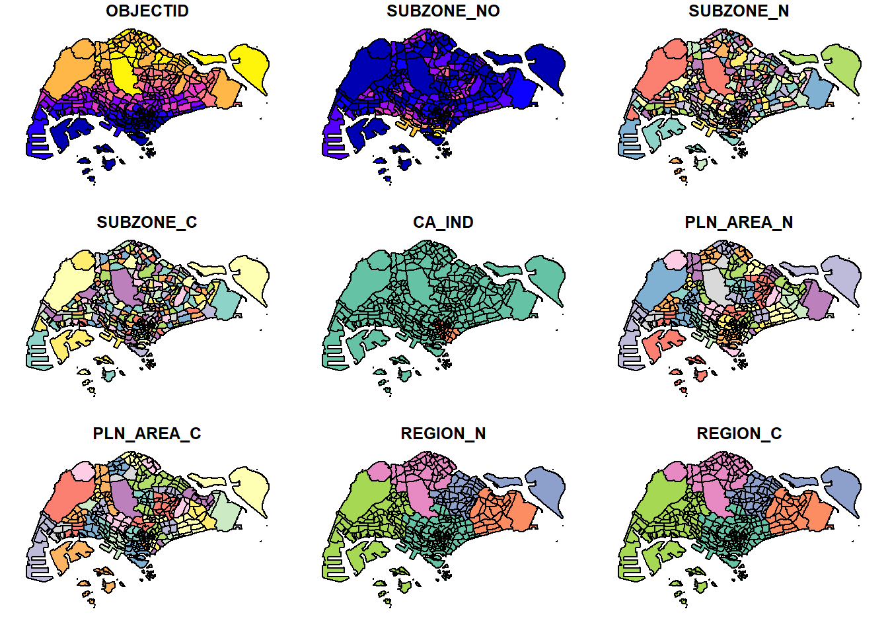

pacman::p_load(sf, readr, dplyr, tidyr, tidyverse, ggplot2)Hands-on Exercise 1b
Getting Started
Objective of this exercise is to import, wrangle, integrate and process geospatial data sets using:
sf library to import geospatial data
readr library to import aspatial data
Use Base R adnd sf libraries yto explore contents fof simple feature data frame
Use sf library to transform or assign coordinate systems
Convert aspatial data into sf data frame and perform geoprocessing tasks using sf library
Use dpylr library to do data wrangling
Perform EDA using ggplot2
Import Libraries
The libraries used in this exercise would be:
sf: simple features in R to encode and analyze spatial vector data
readr: fast way to read rectangular data from delimited files (e.g. csv and tsv)
dplyr: grammar of data manipulation (to work with data frame like objects)
tidyverse: collection of R packages that for data manipulation and visualization
tidyr: tool to create tidy data
ggplot2: create graphics based on “the Grammar of Objects”
The Data
In this hands-on exercise, we’ll be using the following datasets:
Import Geospatial Data
In this section, we’ll learn to import geosptial data using st_read().
Import Polygon Data in Shapefile Format
st_read of sf library will be used to import the Master Plan 2014 Subzone Boundary shapefile into R as polygon feature data frame. When importing the data dsn argument i sused to define data path and layer is used to provide shapefile name without extension.
mpsz = st_read(dsn = "data/MasterPlan2014SubzoneBoundaryWebSHP",
layer = "MP14_SUBZONE_WEB_PL")Reading layer `MP14_SUBZONE_WEB_PL' from data source
`C:\stefanie-fel\ISSS626-GAA\Hands-on_Ex\Hands-on_Ex01\data\MasterPlan2014SubzoneBoundaryWebSHP'
using driver `ESRI Shapefile'
Simple feature collection with 323 features and 15 fields
Geometry type: MULTIPOLYGON
Dimension: XY
Bounding box: xmin: 2667.538 ymin: 15748.72 xmax: 56396.44 ymax: 50256.33
Projected CRS: SVY21From the message above, it reveals that the geospatial objects are multipolygon features and there are 323 multipolygon features and 15 fieds in the data frame. The data frame is in svy21 projected coordinated systems.
Import Polyline Data in Shapefile Form
Similar to importing polygon feature data, we’ll be using st_read from sf library to import the dataset to line feature data frame
cyclingpath = st_read(dsn = "data/CyclingPath_Apr2025",
layer = "CyclingPathGazette")Reading layer `CyclingPathGazette' from data source
`C:\stefanie-fel\ISSS626-GAA\Hands-on_Ex\Hands-on_Ex01\data\CyclingPath_Apr2025'
using driver `ESRI Shapefile'
Simple feature collection with 4651 features and 19 fields
Geometry type: MULTILINESTRING
Dimension: XY
Bounding box: xmin: 11721.1 ymin: 27550.13 xmax: 42809.37 ymax: 49702.59
Projected CRS: SVY21The dataset reveals that there’s 4651 features and 19 fields and they are captured in multilinestring object.
Import GIS Data in KML Format
preschool = st_read("data/PreSchoolsLocation.kml")Reading layer `PRESCHOOLS_LOCATION' from data source
`C:\stefanie-fel\ISSS626-GAA\Hands-on_Ex\Hands-on_Ex01\data\PreSchoolsLocation.kml'
using driver `KML'
Simple feature collection with 2290 features and 2 fields
Geometry type: POINT
Dimension: XYZ
Bounding box: xmin: 103.6878 ymin: 1.247759 xmax: 103.9897 ymax: 1.462134
z_range: zmin: 0 zmax: 0
Geodetic CRS: WGS 84From the import message above, we can see that the dataset is a point feature data frame and there’s 2290 features and 2 fields. The dataset is also set in wgs84 coordinate system.
Check the Content of Simple Feature Data Frame
There are a few approaches to check the content fo a dataframe, such as:
Using st_geomtery
Through using st_geometry, we can see the basic information of the feature class (e.g. type of geometry, geographic extent of the features and the coordinate system of the data
st_geometry(mpsz)Geometry set for 323 features Geometry type: MULTIPOLYGON Dimension: XY Bounding box: xmin: 2667.538 ymin: 15748.72 xmax: 56396.44 ymax: 50256.33 Projected CRS: SVY21 First 5 geometries:Use glimpse()
glimpse() provide basic geospatial feature information as well as associated attribute information in the dataframe like the data type of each fields.
st_geometry(mpsz)Geometry set for 323 features Geometry type: MULTIPOLYGON Dimension: XY Bounding box: xmin: 2667.538 ymin: 15748.72 xmax: 56396.44 ymax: 50256.33 Projected CRS: SVY21 First 5 geometries:Use head()
Head() is used to reveal complete information of the feature object and it gives user flexibility whether to show the whole record of the dataframe, or only a few select (through the argument
n).head(mpsz, n=5)Simple feature collection with 5 features and 15 fields Geometry type: MULTIPOLYGON Dimension: XY Bounding box: xmin: 25867.68 ymin: 28369.47 xmax: 32362.39 ymax: 30435.54 Projected CRS: SVY21 OBJECTID SUBZONE_NO SUBZONE_N SUBZONE_C CA_IND PLN_AREA_N 1 1 1 MARINA SOUTH MSSZ01 Y MARINA SOUTH 2 2 1 PEARL'S HILL OTSZ01 Y OUTRAM 3 3 3 BOAT QUAY SRSZ03 Y SINGAPORE RIVER 4 4 8 HENDERSON HILL BMSZ08 N BUKIT MERAH 5 5 3 REDHILL BMSZ03 N BUKIT MERAH PLN_AREA_C REGION_N REGION_C INC_CRC FMEL_UPD_D X_ADDR 1 MS CENTRAL REGION CR 5ED7EB253F99252E 2014-12-05 31595.84 2 OT CENTRAL REGION CR 8C7149B9EB32EEFC 2014-12-05 28679.06 3 SR CENTRAL REGION CR C35FEFF02B13E0E5 2014-12-05 29654.96 4 BM CENTRAL REGION CR 3775D82C5DDBEFBD 2014-12-05 26782.83 5 BM CENTRAL REGION CR 85D9ABEF0A40678F 2014-12-05 26201.96 Y_ADDR SHAPE_Leng SHAPE_Area geometry 1 29220.19 5267.381 1630379.3 MULTIPOLYGON (((31495.56 30... 2 29782.05 3506.107 559816.2 MULTIPOLYGON (((29092.28 30... 3 29974.66 1740.926 160807.5 MULTIPOLYGON (((29932.33 29... 4 29933.77 3313.625 595428.9 MULTIPOLYGON (((27131.28 30... 5 30005.70 2825.594 387429.4 MULTIPOLYGON (((26451.03 30...
Plotting Geospatial Data
In geospatial data science, it’s important to be able to visualize the geospatial feature as we’re working with maps and location which is difficult to understand without looking at it visually. We can plot in R like below.
plot(mpsz)
But if we just want to show the map as it is, we can use st_geometry().
plot(st_geometry(mpsz))
We can also choose the plot we want to display by specifying the attribute like below.
plot(mpsz["PLN_AREA_N"])
Working with Projection
To perform geoprocessing using geospatial datasets, we need to ensure that geospatial datasets are projected using similar coordinate system or known as projection transformation.
Assign ESPG code to simple feature data frame
When importing geospatial data is that coordinate system of source data was missing or wrongly assigned during importing process. We can check coordinate system of a dataframe using st_crs()
st_crs(mpsz)Coordinate Reference System:
User input: SVY21
wkt:
PROJCRS["SVY21",
BASEGEOGCRS["SVY21[WGS84]",
DATUM["World Geodetic System 1984",
ELLIPSOID["WGS 84",6378137,298.257223563,
LENGTHUNIT["metre",1]],
ID["EPSG",6326]],
PRIMEM["Greenwich",0,
ANGLEUNIT["Degree",0.0174532925199433]]],
CONVERSION["unnamed",
METHOD["Transverse Mercator",
ID["EPSG",9807]],
PARAMETER["Latitude of natural origin",1.36666666666667,
ANGLEUNIT["Degree",0.0174532925199433],
ID["EPSG",8801]],
PARAMETER["Longitude of natural origin",103.833333333333,
ANGLEUNIT["Degree",0.0174532925199433],
ID["EPSG",8802]],
PARAMETER["Scale factor at natural origin",1,
SCALEUNIT["unity",1],
ID["EPSG",8805]],
PARAMETER["False easting",28001.642,
LENGTHUNIT["metre",1],
ID["EPSG",8806]],
PARAMETER["False northing",38744.572,
LENGTHUNIT["metre",1],
ID["EPSG",8807]]],
CS[Cartesian,2],
AXIS["(E)",east,
ORDER[1],
LENGTHUNIT["metre",1,
ID["EPSG",9001]]],
AXIS["(N)",north,
ORDER[2],
LENGTHUNIT["metre",1,
ID["EPSG",9001]]]]As can be seen at the end of the message, the EPSG code is 9001, which is not the EPSG code for svy21. So we can reset by using the st_set_crs()
mpsz <- st_set_crs(mpsz,3414)st_crs(mpsz)Coordinate Reference System:
User input: EPSG:3414
wkt:
PROJCRS["SVY21 / Singapore TM",
BASEGEOGCRS["SVY21",
DATUM["SVY21",
ELLIPSOID["WGS 84",6378137,298.257223563,
LENGTHUNIT["metre",1]]],
PRIMEM["Greenwich",0,
ANGLEUNIT["degree",0.0174532925199433]],
ID["EPSG",4757]],
CONVERSION["Singapore Transverse Mercator",
METHOD["Transverse Mercator",
ID["EPSG",9807]],
PARAMETER["Latitude of natural origin",1.36666666666667,
ANGLEUNIT["degree",0.0174532925199433],
ID["EPSG",8801]],
PARAMETER["Longitude of natural origin",103.833333333333,
ANGLEUNIT["degree",0.0174532925199433],
ID["EPSG",8802]],
PARAMETER["Scale factor at natural origin",1,
SCALEUNIT["unity",1],
ID["EPSG",8805]],
PARAMETER["False easting",28001.642,
LENGTHUNIT["metre",1],
ID["EPSG",8806]],
PARAMETER["False northing",38744.572,
LENGTHUNIT["metre",1],
ID["EPSG",8807]]],
CS[Cartesian,2],
AXIS["northing (N)",north,
ORDER[1],
LENGTHUNIT["metre",1]],
AXIS["easting (E)",east,
ORDER[2],
LENGTHUNIT["metre",1]],
USAGE[
SCOPE["Cadastre, engineering survey, topographic mapping."],
AREA["Singapore - onshore and offshore."],
BBOX[1.13,103.59,1.47,104.07]],
ID["EPSG",3414]]